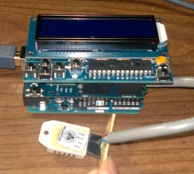

- Arduino Uno R3 - $24
- DHT22 Temperature/Humidity Sensor - $12
- AdaFruit 16x2 LCD Shield - $20
- AdaFruit Wireless Ethernet Shield - $40 (with pass through headers $2)
- 9-12v 1 Amp DC center positive power adapter w/ 2.1mm plug - $6 *
I have also prepared a video walk through of the components

there is actually very little assembly required. The LCD shield is the most complex part, but it only requires basic soldering skills and following a very well documented tutorial that includes plenty of pictures. Note that you may want to skip soldering in the tiny push buttons. See the enclosure link for more details.
Once the shields are complete, you just plug them directly into each other. There is no way to screw it up.

The temperature sensor, is also very simple and only has three wires that have to be soldered on. The wires this sensor requires are :
- 5V (red) ,
- digital pin #2 (blue),
- GND (green)

these are clearly marked on the wifi shield and back of sensor.

You actually have 3 choices of where to connect the Ground (GND) wire, which is why 3 spots are marked green in the picture.
You may notice that I clipped the unused lead off of the DHT22 sensor and plugged the hole in the socket with hot glue. This is so that I can not wire it up backwards which would burn out the sensor.
While all the components may look intimidating, if you have ever installed a car radio, that was more work than this.
*Note: the Wifi card requires allot of power, you will get weird bugs and hangs if you use to small of a power supply or one of low quality.